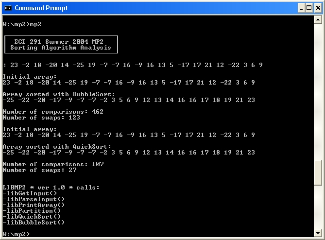

<%
title = "ECE 291 - MP2"
subtitle = "MP2"
%>
Machine Problem 2: Sorting Algorithm Analysis
| Assigned |
Thursday, June 24, 2004 |
| Due Date |
Friday, July 2, 2004 |
| Purpose |
User Input, C-style Procedures, Sorting
Algorithms |
| Points |
80 |
Problem Description

Your program will be:
- Obtaining user input and storing the input in a
buffer
- Parsing the string of numbers into an array
- Sorting the array with two different
and analyzing their performance
Obtaining User Input
User input will be obtained from the keyboard. As the user types a
string of numbers, you should store the string to a buffer. Your program
should also allow the user to use the backspace key if he or she mistypes a
character in the string. In this situation, the cursor should be moved to
the previous location on the screen, and the last character in the buffer should
be allowed to be overwritten by a new value.
Parsing User Input
Once you've written the input string to the buffer, you need to parse it into an
array of numbers. This is much easier as it seems, thanks to the library ascbin function. Take a look at the lab manual to see how it works - it
will save you a great deal of time. You should traverse the entire input string, pulling out one number at a time, converting it from ascii to
binary, and storing the number into the array whose pointer is passed in to
the ParseInput function. Keep track of how many numbers you parse.
Remember that the input string is '$' terminated, so stop when you reach a
'$'. The array can hold up to 25 numbers, so if there are more numbers in
the input string than 25, you should not add the extra ones to the array.
If ascbin returns an error code (dl is nonzero), the ParseInput function should
return -1 to indicate there was an error in parsing the input; otherwise, you
should return the length of the array (how many numbers you successfully
parsed).
Development Log and Cover Memo
As you work on the MP, you will keep a simple MP development
log. The log will document your design decisions, development plan, and
debugging experiences, including the time you spent on different parts of the
machine problem. The log may be kept in any form. In general, whenever you work
on a machine problem, briefly record the starting time, significant design
decisions, progress in coding and testing, bugs you discovered, and the ending
time. Do not record simple syntax errors detected by NASM at assembly
time; these are not considered to be bugs.
Then, you will submit a cover memo of 200 to 400 words (up to one page,
single spaced). The cover memo should answer the following questions, based on
the information that you record in your MP development log.
- How much time did you spend on the design, coding, and testing of each
part or subroutine?
- What kinds of defects (bugs) did you find during the development of the
program? When did you discover these defects (during code review or during
testing)? How did you find them?
- What you would do differently for the next MP?
Type your cover memo into a plain text file in your MP2 directory.
Hints
- The LIBMP2 file contains executable library functions for each of the
routines that you need to implement.
This allows you to run the program and understand how it works before you implement it. You can test your program with any combinations of your own
code and library functions. You will only receive credit, however, for
the routines that you implement yourself.
- When debugging your code in TD, you will find it helpful to use
the memory window to show you the memory location of the file and strings.
You can also use the watch window to keep track of variables in your code.
- Do not assume that the file starts at memory location 0.
- You may define new variables as needed.
- Be very careful if you call another procedure not to destroy registers
that the calling procedure uses.
- You need to preserve register values in all of the procedures you
write. To do this, push all the registers you use in the procedure at
the beginning of the procedure. Then, pop them all in reverse order at
the end of the procedure (right before you ret).
- You need to create function headers for each of the functions you
write. Function headers should include the name of the function, the
list of inputs to the function, the list of the outputs, and any functions
that the function calls. You will lose points if you do not do this!
- START EARLY!
- Monitor the
webboard for clarifications and help.
Procedures
This assignment has six procedures. You will receive credit by replacing
each of these six procedures listed below with your own code.
Each of the procedures you will write in this MP is C-style. Thus, the
inputs to the procedures (if any) are passed on the
stack. Inputs with asterisks (*) indicate pointers, and inputs without
asterisks indicate actual values. If the procedure returns a value, the value will be returned in AL
or AX. Also, the general purpose registers other than SI and DI may be
overwritten (you do not have to preserve their values).
The size of the inputs, as well as the size of the return value, are included
in each procedure definition. If a procedure does not have any inputs, void
will be present in the parentheses. Similarly, if the function does not
return a value, it will be declared as void before the name of the
function.
word GetInput(word *BufferPtr)
- Obtains input from the user and stores to buffer in memory
- Inputs:
- BufferPtr - Pointer to buffer in memory
- Outputs: Buffer filled with input data
- Returns: Non-zero if the user presses ESC to exit the program, 0 otherwise
- Calls: kbdin, dspout
- Notes:
- The buffer has a maximum size of 75 bytes - make sure that you do not exceed the buffer
length
- Terminate the input loop when the user presses either the ESC key or the ENTER
key. Set the appropriate return value, and if the user pressed the
ENTER key, also add a '$' to the end of the buffer.
- You should correctly handle backspacing. If the user hits
backspace, you the cursor should move back to the previous spot, and the
character at that spot should be removed on the screen. The current
position in the buffer must also be updated. If you are at the
beginning of the buffer and a backspace key is received, you should not
process it.
- Points: 15
word ParseInput(word *BufferPtr, word *ArrayPtr)
- Parses the buffer and stores numbers in buffer to an array in memory
- Inputs:
- BufferPtr - Pointer to buffer in memory
- ArrayPtr - Pointer to array in memory
- Outputs: Array contains numbers stored in buffer
- Returns:
- -1 if there is an error in parsing the buffer, length of the array
(number of integers parsed from the buffer) otherwise
- Calls: ascbin
- Notes:
- The buffer is terminated with a '$'
- Read the lab manual on how ascbin works - it will make your life much
easier
- The array can hold up to 25 integers - if you encounter more than 25 in
the buffer, do not add the extra ones to the array
- Points: 15
void PrintArray(word *ArrayPtr, word ArrayLength)
- Displays an array in memory to the screen
- Inputs:
- ArrayPtr - Pointer to an array in memory
- ArrayLength - Length of the array
- Outputs: Displays array to screen
- Returns: None
- Calls: binasc, dspmsg, dspout
- Notes:
- Separate each number in the array by a space and move the cursor to the
next line when completed
- Use binasc to obtain an ASCII representation of each number in the
array. Also use the binascBuf buffer when calling binasc and
displaying the number to the screen.
- Each cell in the arrays you will be displaying is one word in size, not
one byte
- Points: 10
word Partition(word *ArrayPtr, word First, word Last)
- Partitions an array in memory
- Inputs:
- ArrayPtr - Pointer to an array in memory
- First - Index number of the array where you want to start partitioning
- Last - Index number of the array where you want to stop
partitioning
- Outputs: Array is correctly partitioned
- Returns: The index number of the pivot element
- Calls: None
- Notes:
- The Partition pseudocode has been provided to you
- Each cell in the arrays you will be partitioning is one word in size, not
one byte
- Points: 20
void QuickSort(word *ArrayPtr, word First, word Last)
- Sorts an array in memory with the QuickSort algorithm
- Inputs:
- ArrayPtr - Pointer to an array in memory
- First - Index number of the array where you want to start sorting
- Last - Index number of the array where you want to stop sorting
- Outputs: CompareCount, SwapCount
- Returns: None
- Calls: Partition, QuickSort
- Notes:
- The QuickSort pseudocode has been provided to you
- Each cell in the array is one word in size, not
one byte
- Keep track of comparisons and swaps with CompareCount and SwapCount,
respectively
- When you call Partition and QuickSort, remember to push the arguments
onto the stack in reverse order
- Points: 10
void BubbleSort(word *ArrayPtr, word ArrayLength)
- Sorts an array in memory with the BubbleSort algorithm
- Inputs:
- ArrayPtr - Pointer to an array in memory
- ArrayLength - Length of the array
- Outputs: CompareCount, SwapCount
- Returns: None
- Calls: None
- Notes:
- The BubbleSort pseudocode has been provided to you
- Keep track of comparisons and swaps with CompareCount and SwapCount,
respectively
- Each cell in the array is one word in size, not
one byte
- Points: 10
Procedure
- You will begin this MP with the following files:
- MP2.ASM: Program Framework
- Makefile: Specifies how and when programs are assembled
and linked.
- LIBMP2.LIB: Library functions for MP2
- LIB291.LIB: General-purpose library functions
- You may copy these files from the network drive to your home directory
with the following command:
xcopy /s V:\ece291\mp2 W:\mp2
or download the files from this server as mp2.zip
- Add your code to MP2.ASM.
- Assemble and link your program by typing make. This command reads
the Makefile then invokes NASM and TLINK to build
an executable program.
- Use TD debugger to find and correct program errors.
Final Steps
- Demonstrate your MP2.EXE to a TA or to the instructor. The TA or
instructor will verify that your program produces the correct output.
- Be prepared to answer questions about any aspect of the operation of
your program. The TAs will not accept an MP if you cannot fully explain
the operation of your code and details of your implementation. Delayed
MPs will be subject to late penalties as described in the course
syllabus (10pts/day).
- The TA will handin your MP online.